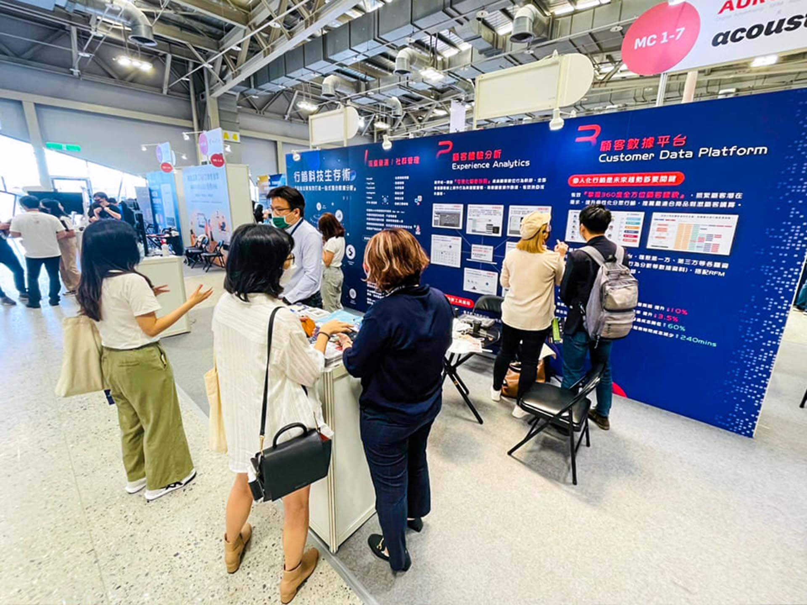

特聿科技行銷X數位時代，共譜零售業轉型生存術！
新冠病毒（COVID-19）的來襲，改變了人與人之間的相處模式。有工作狀態與家庭模式的改變、也有消費模式的更動，大到企業間的銷售、行銷模式也從實體通路轉至線上。
此次特聿科技行銷受邀數位時代分享全通路整合。
從O2O到OMO 我們告別了純零售或純電商的型態，結合行銷科技，實行數位轉型之路。
特聿從資料收集與分析（Analytics）到行銷Campaign的建立，主打將內容（Content）個人化（Personalization）

圖片來源：數位時代未來商務展
透過全渠道通路看市場互動
從 Consume to Business 的角度出發，讓消費者能在不同的通路上，享有更完美的購物經驗，特聿協助品牌串連接銷售與行銷兩端，給與強而有力的支援。
透過整合線上、線下不同渠道的系統，幫品牌進行資源收集進一步透過AI進行資料清洗，像是網站EC平台、CRM、POS機、Email、App、以及各社群平台如：FB、IG等公開資料進行Omni Channel的全渠道通路整合。
整合後進行資料清洗，我們將您已知客戶與潛在客戶進行分眾貼標，打造出獨一無二的行銷受眾包，搭配上特聿大中華獨家代理的顧客體驗分析功能(Tealeaf- Acoustic Experience Analytics)
結合影像回放(session replay)、熱點圖(Heat Maps)、困境分析(Attention Map)並搭配使用者旅程分析(Journey Analytics)等功能，真實的了解使用者的困境，並快速解決使用者操作上的問題，連同後端UI/UX設計師與客服兩端都能快速的與使用者產生共同語言，節省大量時間，更將使用者體驗持續提升。
我們卻信透過有效的數位工具應用能達成：
-
事先預測消費者的下一步動作
-
了解消費者想要知道什麼樣的資訊
-
穩定地釋出越來越深層的訊息
-
自然地邀請消費者到別的管道、通路進行互動
並且我們透過接觸點的整合，更全面的找出TA受眾並能分辨出主要顧客、含金量高的顧客、有潛力的顧客 。
此次透過未來商務展的邀請，特聿的程總經理Roger將於FC CHOICE中演講，為您解析特聿數位轉型的解決方程式，讓疫情中的您跟隨科技腳步不漏接。

圖片來源：數位時代未來商務展
※由於疫情關係，未來商務展改期並『轉至線上年會』，將舉行於8/28-8/30
-
想知道什麼是顧客永續經營的致勝關鍵嗎？
想知道的朋友們『Roger將在8/30(五) 15:30 FC Choice論壇直播』與大家相見，全面剖析數位布局整合線上、線下的顧客經營喔！